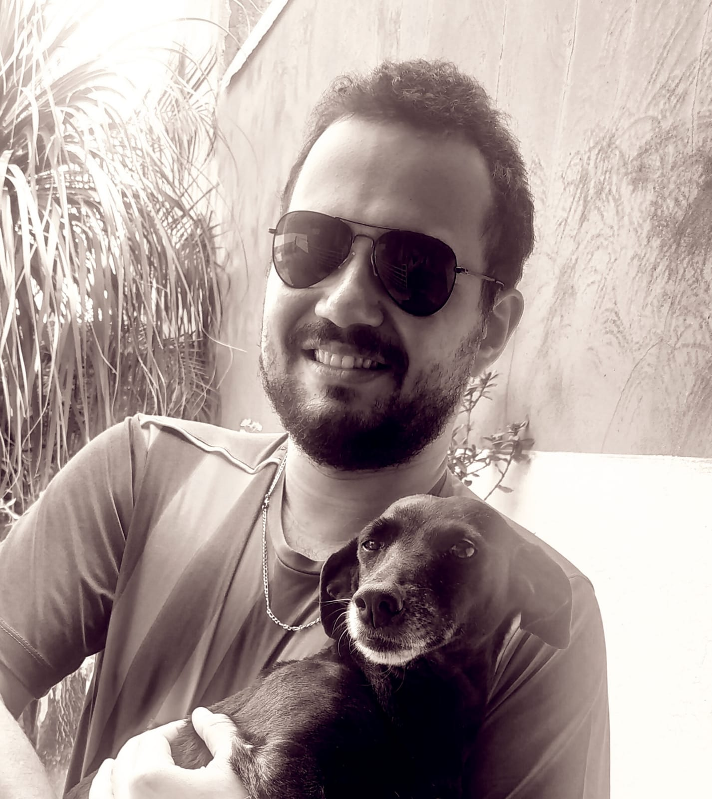
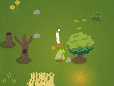
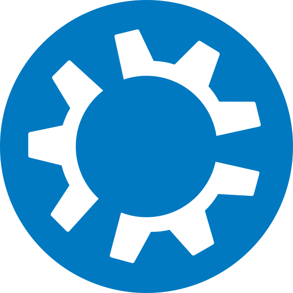
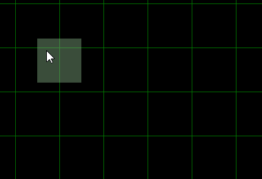
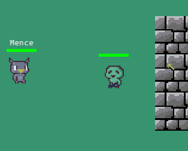
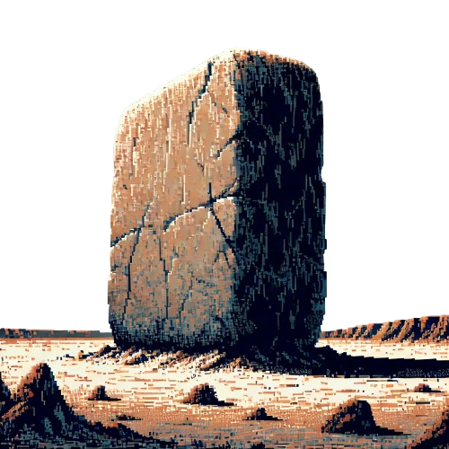
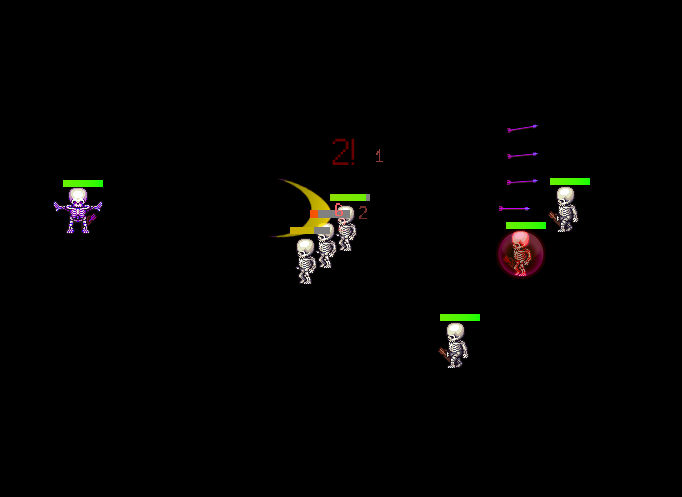

Welcome!
My name is Mence, I work with backend development, devops, and gamedev.

I discovered my passion for programming at the age of ten when I edited and tried to create my own custom maps for games like Warcraft III and Unreal Tournament.
Since then, I have always been involved with computers and programming, trying to bring my ideas and concepts from my mind into the digital world.
You will always find me working on some personal project, starting with an idea or fixing existing ones. I am always working on new projects in my free time (usually games), I like to automate manual server tasks with bash on Linux and think about new spells for RPGs. The ideas never stop flowing.
You can check my projects or contact me if you wish!
A little more about me
My first experience with a computer that I remember was with Windows 98 computers in my school's computer lab when I was 7 years old.At 9 years old, my father bought a computer with Windows XP where I remember playing Raptor and Pekka Kanna 2. With this same computer, I discovered games like Generally, Half-Life, UT99, and Warcraft III.
It was with this last game that I got into the World Editor, the game's map editor. I started by modifying maps that were already created, like WarChasers, to understand how they worked, until I began creating my own versions of these map models with blank maps. I learned more about triggers and the steps of game development, even if in an offline and rudimentary way.
In 2007, at the age of 11, I got access to the internet at home via radio connection because I lived on a farm. Through Battle.Net, I met friends with whom I still keep in touch and learned more about development by joining forums and communities.
At some point in my early teens, I studied Visual Basic in a computer course I attended in my town. This was my "first" contact with a language that wasn't a game's internal programming language.
At 16, I joined a technical course in computer science in my town and discovered Delphi. I was amazed by the fact that I could now create my own executable files (.exe) and quickly started developing various types of projects using the components available in the IDE.
In 2013, at the age of 17, I got a programming job to work with Delphi and Firebird, developing and maintaining accounting systems for offices.
In 2014, I started college in Computer Engineering, where I had contact with robotics subjects like Arduino and PIC, as well as subjects like Computer Graphics, Mobile Development, Networks, and Data Structures.
In 2022, I was working in backend development with NodeJS but also had some knowledge of React.
During this period, I have developed freelance projects in Python, automations for Raspberry PI, and PHP.
Currently, I focus my free time on studying, especially on my projects and Linux server management.
Projects
| Boltcraft II (2022 - 2024) |
|---|
|  |
|
One of my most recent projects that I've been working on for the past few months.
Boltcraft II counts for me as a new experiment. The style of using procedural generation for the first time,
fog of war, minimap, and equippable weapons make this version of the game surpass the first one both graphically
and technically. The only thing I initially planned to implement was Co-op multiplayer, but that will have to wait
for the next edition. xD This game was made using version 1.5 of Monolith, which was continued from version 1.34 of the first Boltcraft. The game is complete and totally free to download and play on itch.io here! |
| Helper (2024 - Present) |
|  |
|
After a few years of being 100% on Linux,
formatting and installing on a machine (especially if testing other distros) becomes a repetitive process of
installing the dependencies I use daily. So, I developed a small set of scripts to automate the task in a modular way, allowing me to configure it differently depending on the machine I'm installing it on (Work or Personal). It's available on GitHub. |
| Boltcraft (2021 - 2022) |
 |
|
The first (and only so far) game I published on Steam. It was the first game
I seriously committed to completing, based on the engine I had just finished, Monolith 1.0. Although it lacks proper polish and wasn't successful on Steam, it was a project that I felt extremely proud of at the time because it was my first step towards my path in Gamedev. The game features a complete campaign, a boss run mode, and a sandbox to test skills. It's available on Steam. |
| Realm Editor (2021 - Present) |
|  |
|
An editor I developed to create maps dynamically to be read by games made in the Monolith
Game Engine. It was the creation of Realm Editor that made Boltcraft I and II possible. I am still providing periodic maintenance as new projects and new versions of MGE arise, to keep map generation aligned with game development. Currently, it is available on GitHub. Funny fact: I found out about tools like Tiled, which had the same purpose as the software I had developed, months after completing Realm Editor (LOL). Still, I chose not to discontinue the project and continue using it for my games :P. |
| Lamina (2021) |
|  |
|
A game I developed alongside MGE. During development, there were several versions and refactorings,
and the ideas from this game converged into Boltcraft I. The game is rudimentary and has only one stage, but it is fully functional. It is available on itch.io! |
| Monolith Game Engine (2019 - Present) |
|  |
|
A game engine I developed over time to create my games. Written purely in C++,
I used the SFML and Boost libraries for graphics and much of the project's code. I am currently developing version 2.0, which includes multiplayer and a graphical redesign using the imGUI library. Currently, there is no public version of the project, but I plan to release one in the future. (y) |
| Python Game Engine Concept (2019) |
|  |
|
My first standalone project in gamedev. Before this, I only did college projects,
including my thesis, and my games were basically maps I created in the Warcraft III World Editor. I used pyglet, a variant of pygame, to develop this prototype. Unfortunately, due to my lack of experience with optimization and game loop design, the game ended up being very slow despite being quite simple. I keep it in my repositories for the experience and to see where I started. The source code is available on GitHub. |
| Pitchula Photoreader (2017 - 2018) |
 |
|
My thesis project, converted into a mini-library that reads a photo of a written document,
converts it into text, and then into audio. At the time, I used it with a Raspberry PI and a camera to create my college project. The source code is available on GitHub. |
Blog
Friends to check it out!
CSFelix
A Brazilian Data Scientist & Analytics Student and a Full-Stack Developer. He's currently working on Data Science Projects, such as Recommendation Systems, and improving my Analytic Skills.